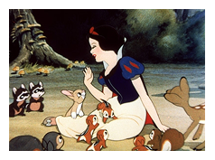
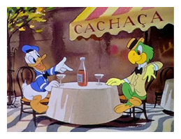
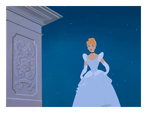
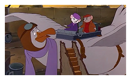
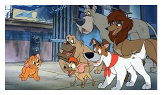
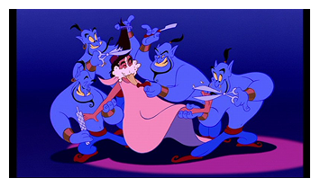
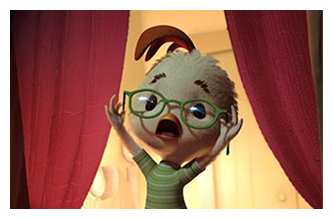
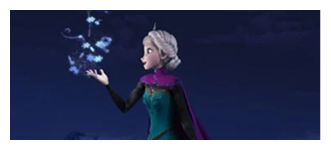
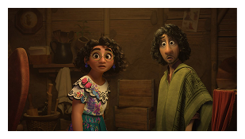

L’epoca D’oro (1937-1942)
La cosiddetta Epoca d'Oro comprende il primo ciclo di lungometraggi d'animazione targati Disney, ovvero i film usciti tra il 1937 e il 1942.
Sono cinque i Classici nati da un'idea di Walt Disney e a cui il geniale animatore ha lavorato direttamente, vedendoli diventare dei cartoni senza tempo.
All'epoca rivoluzionarono lo stile e le tecniche animate di quel tempo, prendendo ispirazione a piene mani da alcune fiabe.

L’epoca di guerra (1942-1949)
Sono sei i film usciti in quest'Epoca di Guerra, legata indissolubilmente alla Seconda Guerra Mondiale. Un periodo in cui vi era una scarsa diffusione dei film nel mercato europeo, in un clima generale caratterizzato da incertezza e instabilità. Tanto da vedere Topolino con addosso una maschera antigas!
I lungometraggi usciti in quest'epoca sono film a episodi, distribuiti spesso insieme a corti bellici, realizzati in low budget. A volte anche riadattando corti già esistenti, proprio per riuscire a risparmiare.

L’epoca D’argento (1950-1967)
La cosiddetta Epoca d'Argento coincide in parte con la morte di Walt Disney stesso, avvenuta nel 1966. Tra il 1950 e il '67 vennero prodotti ben otto lungometraggi. Cosa caratterizzava i Classici dell'Epoca d'Argento Disney?
La Casa di Walt torna ad ispirarsi ai protagonisti delle fiabe popolari e della letteratura, da Cenerentola ad Alice, dalla Bella Addormentata a Re Artù. Ritorna così anche un elemento caratteristico che rimarrà negli anni: le canzoni e i brani musicali originali.

L’epoca di Bronzo (1970-1977)
Sono solamente quattro i film che compongono l'Epoca di Bronzo, che va dal 1970 al 1977. Una fase di passaggio, dopo il periodo fortunato post-bellico e prima del Medioevo Disney post-morte di Walt, in cui si riciclavano sequenze di vecchi Classici Disney per dare loro nuova vita, nuova storia, nuova linfa. La musica e soprattutto l'avventura la fanno da padrone in questi film.

Il Medioevo (1981-1988)
Proprio come l'Epoca di Guerra è stata fortemente influenzata dal secondo conflitto mondiale, anche il periodo successivo alla morte di Walt Disney non è stato dei più felici.
Mancava una guida creativa, una nuova linea editoriale chiara che ereditasse dalla precedente, dato il pensionamento dei Nine Old Men, e delle storie che catturassero di nuovo l'attenzione del pubblico, soprattutto dopo l'allontanamento di Don Bluth che fondò la propria casa di produzione.
Il Medioevo Disney va dal 1981 al 1988 e comprende quattro film.

Il Rinascimento (1989-1999)
Uno dei periodi forse più celebri e più floridi di tutta la storia della Casa di Topolino e dell'animazione tutta. Dopo il buio del Medioevo, ecco arrivare la luce del Rinascimento Disney, che comprende ben dieci film usciti tra il 1989 e il 1999 e prese il nome da Jeffrey Katzenberg, all'epoca direttore della sezione cinematografica della Walt Disney Pictures.
Pubblico e critica tornano a lodare e premiare i Walt Disney Animation Studios, che ripescano le caratteristiche più fortunate dei loro Classici: i brani musicali originali, un protagonista giovane e spesso orfano, una storia d'amore impossibile e i cosiddetti sidekick, gli animali e aiutanti dell'eroe/eroina protagonista.
Sempre in questo periodo iniziano anche le prime sperimentazioni digitali e l'attenzione per i momenti musical, tra le canzoni più ricordate di tutta la storia della Disney.

L’epoca Sperimentale (1999-2008)
Siamo a cavallo del Nuovo Millennio e quindi non poteva che essere questa l'Epoca Sperimentale, che rinnova, osa e prova gettandosi nella CGI, questo nuovo trend che si stava sempre più adottando nell'animazione rispetto a quella tradizionale.
Dal 2000 al 2008, sono ben undici i lungometraggi prodotti che vedono ancora le canzoni al centro, o a volte semplicemente la musica, ma niente storie d'amore: ci sono i protagonisti - spesso animali antropomorfi - e le loro (dis)avventure.
Un periodo che non ha sempre riscosso successo di pubblico, che spesso ha compreso alcuni di questi titoli in modo postumo, ma ha anche proposto alcune storie davvero geniali, come Le follie dell'imperatore, modernissimo e anticonformista che prendeva in giro e parodiava gli stilemi delle stesse fiabe Disney ben prima di Frozen.

L’epoca Revival o Nuovo Rinascimento (2009-2016)
C'è un nuovo direttore creativo in città: John Lasseter, a capo sia dei Walt Disney Animation Studios sia della Pixar. Con lui arriva la cosiddetta Epoca Revival, chiamata anche Nuovo Rinascimento, proprio in virtù del fatto che fa tornare in massa pubblico e critica nei favori della Casa di Topolino come accadde negli anni '80-'90.
Otto i titoli proposti tra il 2009 e il 2016, che riprendono ancora una volta gli stilemi dei Classici Disney a cui bene o male si tende sempre a tornare. Quindi canzoni, ispirazioni fiabesche e letterarie, storie d'amore impossibili, un pizzico d'avventura, con una nuova apertura ad altre leggende e continenti e un ultimo attaccamento all'animazione tradizionale. Non mancano anche alcune tematiche di attualità, come la disparità sociale.

La Nuova Epoca (2018-2024)
La Nuova Epoca, l'ultima nel momento in cui scriviamo, comprende i Classici Disney prodotti dopo le dimissioni di Lasseter dal ruolo di direttore creativo, quindi dal 2018 in poi.
Al suo posto arriva Jennifer Lee (quindi una donna) con un nuovo assetto e una nuova linea editoriale, che prova a trovare una linea di congiunzione tra passato, presente e futuro.
Non sempre riuscendoci, aprendosi a culture non ancora esplorate, a volte sperimentando come in Raya e l'Ultimo Drago a volte tornano su porti più sicuri, come in Encanto, spesso con alcuni sequel come quello di Frozen.